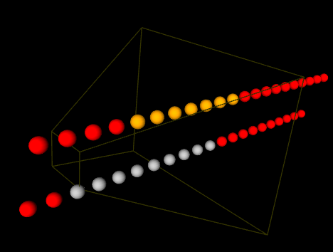
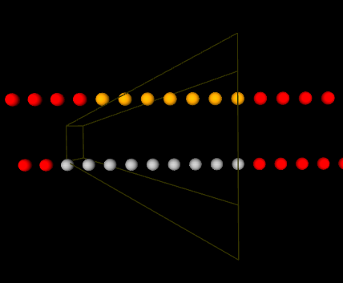

The "Camera" and Geometric Transforms
Introduction
This page describes conventions for specifying projection and view transforms in 3D graphics, especially when using my HTML 3D Library, and explains how the GL pipeline transforms vertices to help it draw triangles, lines, and other graphics primitives.
Download the latest version of the library at the HTML 3D Library's Releases page.
Contents
- Introduction
- Contents
- Projection Transform
- View Transform
- Vertex Coordinates in the Graphics System
- Other Pages
Overview of Transformations
Most modern 3D rendering engines use the following transformations:
- A world matrix transforms an object's own coordinates to world space, the coordinate system shared by every object in the scene. The world matrix is not discussed in this page.
- A view matrix transforms coordinates in world space to eye space.
- A projection matrix transforms coordinates in eye space to clip space. If we use the concept of a "camera", the projection matrix is like setting the camera's focus and lens, and the view matrix is like setting its position and orientation.
As explained later on this page, however, these transformations and matrices are merely for the convenience of the rendering engine; all the graphics pipeline expects is the clip space coordinates of the things it draws. The pipeline uses those coordinates and their transformed window coordinates when rendering things on the screen.
Projection Transform
A projection matrix transforms coordinates in eye space to clip space.
Two commonly used projections in 3D graphics are the perspective projection and orthographic projection, described below.
Perspective Projection
A perspective projection gives the 3D scene a sense of depth. In this projection, closer objects look bigger than more distant objects with the same size, making the projection similar to how our eyes see the world.


The 3D scene is contained in a so-called view volume, and only objects contained in the view volume will be visible. The lines above show what a perspective view volume looks like. Some of the spheres drawn would not be visible within this view volume, and others would be.
The view volume is bounded on all six sides by six clipping planes:
- The near and far clipping planes are placed a certain distance from the camera. For example, if the near clipping plane is 3 units away and the far clipping plane is 5 units away, the view volume will hold only objects between 3 and 5 units from the camera. (Strictly speaking, a near clipping plane is not necessary, but practically speaking it is, in order to make the math work out correctly.)
- The left, right, top, and bottom clipping planes form the other four sides of the volume.
Note further that:
- The angle separating the top and bottom clipping planes is the projection's field of view. This angle is similar to the aperture of a camera. The greater the vertical field of view, the greater the vertical visibility range.
- In a perspective projection, the view volume will resemble a "pyramid" with the top chopped off (a frustum). The near clipping plane will be located at the chopped-off top, and the far clipping plane will be at the base.
The perspective projection converts 3D coordinates to 4-element vectors in clip space. However, this is not the whole story, since in general, lines that are parallel in world space will not appear parallel in a perspective projection, so additional math is needed to achieve the perspective effect. This will be explained later.
The following methods define a perspective projection.
MathUtil.mat4perspective(fov, aspect, near, far)
This method returns a 4x4 matrix that adjusts the coordinate system for a perspective projection given a field of view and an aspect ratio, and sets the scene's projection matrix accordingly.
fov- Vertical field of view, in degrees.aspect- Aspect ratio of the scene. You should usually usescene3d.getClientAspect().near,far- Distance from the camera to the near and far clipping planes.
[MathUtil.mat4frustum(left, right, bottom, top, near, far)](http://peteroupc.github.io/html3dutil/MathUtil.html#.mat4frustum)
This method returns a 4x4 matrix that adjusts the coordinate system for a perspective projection matrix based on the location of the six clipping planes that bound the view volume. Their positions are chosen so that the result is a perspective projection.
left,right,bottom,top- Location of the left, right, bottom, and top clipping planes in terms of where they meet the near clipping plane.near,far- Distance from the camera to the near and far clipping planes.
Orthographic Projection
An orthographic projection is one in which the left and right clipping planes are parallel to each other, and the top and bottom clipping planes are parallel to each other. This results in the near and far clipping planes having the same size, unlike in a perspective projection, and objects with the same size not varying in size with their distance from the "camera".
The following methods generate an orthographic projection.
MathUtil.mat4ortho(left, right, bottom, top, near, far)
This method returns a 4x4 matrix that adjusts the coordinate system for an orthographic projection.
left- Leftmost coordinate of the 3D view.right- Rightmost coordinate of the 3D view.bottom- Topmost coordinate of the 3D view.top- Bottommost coordinate of the 3D view.near,far- Distance from the camera to the near and far clipping planes. Either value can be negative.
MathUtil.mat4ortho2d(left, right, bottom, top)
This method returns a 4x4 matrix that adjusts the coordinate system for a two-dimensional orthographic projection. This is a convenience method that is useful for showing a two-dimensional view. The mat4ortho2d method calls mat4ortho and sets near and far to -1 and 1, respectively. This choice of values makes a Z coordinate of 0 especially appropriate for this projection.
left,right,bottom,top- Same as inmat4ortho.
MathUtil.mat4orthoAspect(left, right, bottom, top, near, far, aspect)
This method returns a 4x4 matrix that adjusts the coordinate system for an orthographic projection, such that the resulting view isn't stretched or squished in case the view volume's aspect ratio and the scene's aspect ratio are different.
left,right,bottom,top,near,far- Same as insetOrtho.aspect- Aspect ratio of the viewport.
Other Projections
There are other kinds of possible projections, such as oblique projections or isometric projections.
View Transform
The view matrix transforms world space coordinates, shared by every object in a scene, to coordinates in eye space (also called camera space or view space), in which the "camera" is located at the center of the coordinate system: (0, 0, 0). A view matrix essentially rotates the camera and moves it to a given position in world space. Specifically:
- The camera is rotated to point at a certain object or location on the scene. This is represented by
the
lookingAtparameter in thesetLookAt()method, below. - The camera is placed somewhere on the scene. This is represented by
the
eyeparameter in thesetLookAt()method. It also represents the "eye position" in the perspective projection, above. - The camera rolls itself, possibly turning it sideways or upside down. This is guided by
the
upparameter in thesetLookAt()method. Turning the camera upside down, for example, will swap the placement of the top and bottom clipping planes, thus inverting the view of the scene.
MathUtil.mat4lookat(eye, lookingAt, up)
This method allows you to generate a view matrix based on the camera's position and view.
eye- Array of three elements (X, Y, Z) giving the position of the camera in world space.lookingAt- Array of three elements (X, Y, Z) giving the position the camera is looking at in world space. This is optional. The default is [0, 0, 0].up- Array of three elements (X, Y, Z) giving the vector from the center of the camera to the top. This is optional. The default is [0, 1, 0].
Vertex Coordinates in the Graphics System
The concepts of eye space, camera space, and world space, as well as the use of matrices related to them, such as projection, view, model-view, and world matrices, are merely conventions, which exist for convenience in many 3D graphics libraries.
When the graphics pipeline (outside of the 3D graphics library concerned) draws a triangle, line or point, all it really expects is the location of that primitive's vertices in clip space. A so-called vertex shader communicates those locations to the graphics pipeline using the input it's given. Although the vertex shader can use projection, view, and world matrices to help the pipeline find a vertex's clip space coordinates, it doesn't have to, and can use a different paradigm for this purpose. For example, the vertex shader can be passed vertex coordinates that are already in clip space and just output those coordinates without transforming them.
As the name suggests, clip space coordinates are used for clipping primitives to the screen. Each clip space vertex is in homogeneous coordinates, consisting of an X, Y, Z, and W coordinate, where the X, Y, and Z are premultiplied by the W. The perspective matrix returned by MathUtil.mat4perspective, for example, transforms W to the negative Z coordinate in eye space, that is, it will increase with the distance to the coordinates from the "eye" or "camera".
To take perspective into account, the clip space X, Y, and Z coordinates are divided by the clip space W, and then converted to window coordinates, which roughly correspond to screen pixels. The window coordinates will have the same range as the current viewport. A viewport is a rectangle whose size and position are generally expressed in pixels.
For the perspective matrix returned by mat4perspective, dividing
the X, Y, and Z coordinates by the clip space W results in the effect that as W gets
higher and higher (and farther and farther from the "eye" or "camera"),
the X, Y, and Z coordinates are brought closer and closer to the center of the view. This
is the perspective effect mentioned earlier: objects will appear smaller and smaller
as they are more and more distant from the "camera".
Other Pages
The following pages of mine on CodeProject also discuss this library: